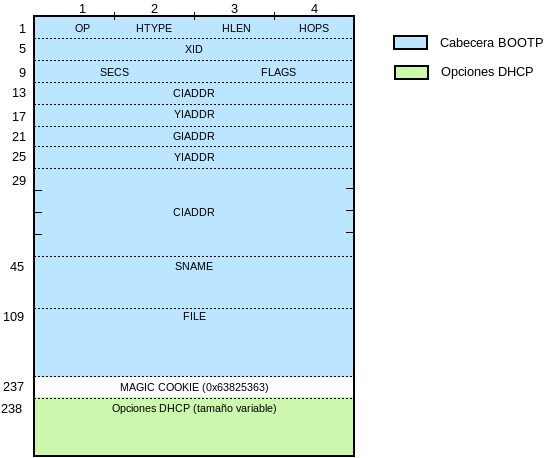

6.1.1. Descripción del protocolo¶
6.1.1.1. Comunicación¶
La comunicación se realiza entre el puerto 67/UDP del servidor y el puerto 68/UDP del cliente y puede ir encaminada a distintos propósitos:
Pedir la concesión de una dirección IP.
Pedir la renovación de la IP ya concedida.
Pedir la anulación de la concesión.
Analicémoslo por separado.
6.1.1.1.1. Concesión¶
EL protocolo se inicia cuando un cliente que requiere una configuración de red, la pide mediante el envío de un paquete DHCPdiscover. Dado que el cliente aún no tiene configuración de red, la IP de origen se fija a 0.0.0.0 y la dirección de destino la de broadcast universal (tanto en capa 3, 255.255.255.255, como en capa 2, FF:FF:FF:FF:FF:FF).
Como consecuencia, el paquete llegará a cualquier máquina dentro de la red y, si alguna es un servidor DHCP, esta responderá enviando un paquete DHCPoffer en el que le propone una dirección IP libre. Este paquete usa como dirección de origen la IP del servidor y como dirección de destino la IP ofrecida, aunque antiguamente se usaba la dirección de broadcast universal.
Si el cliente acepta la IP, entonces envía una petición formal al servidor mediante un paquete DHCPrequest en la que incluye una lista de parámetros de red[1] cuyos valores le gustaría que el servidor le proporcionara. Esta lista de parámetros es una lista de números enteros, ya que cada parámetro de red está representado por un número. Tales parámetros se refieren a la máscara de red, la dirección IP, los servidores DNS, etc. Este paquete tiene las mismas direcciones de origen y de destino que el paquete DHCPdiscover, puesto que el cliente sigue sin estar configurado.
Recibido el paquete anterior, el servidor responde con un paquete DHCPack donde se incluyen unos campos iniciales con cierta información (la IP ofertada, la dirección del siguiente servidor, etc.) y el valor de los parámetros que el cliente le requirió. Entre ellos (es el número 51), está el que define el periodo de vigencia de la concesión. Las direcciones de origen y destino son las mismas que para el paquete DHCPoffer. Cuando el paquete es recibido por el cliente, este podrá por fin configurar su interfaz y particicpar normalmente en las comunicaciones de la red.
6.1.1.1.2. Renovación¶
Cuando la concesión de una IP está próxima a expirar, el cliente envía un paquete DHCPrequest en que pide al servidor que prorrogue la concesión. Este paquete tiene las mismas direcciones de origen y destino que las explicadas para el DHCPrequest que se explicó en el caso anterior.
Si el servidor accede, entonces devolverá un paquete DHCPack con la configuración de red y el cliente disfrutará de la concesión otro periodo de tiempo.
6.1.1.1.3. Revocación¶
Si el cliente desea renunciar a la concesión antes de que acabe el plazo (por ejemplo, porque piensa apagarse y no desea seguir ocupando la dirección IP), puede entonces enviar al servidor un paquete DHCPrelease que utiliza como dirección de origen la IP del cliente y como dirección de destino la del servidor. Al recibir este paquete el servidor dará por finalizada la concesión y liberará la IP para que pueda ser entregada de nuevo
Si el cliente no envía este aviso, el servidor esperará a que el plazo expire par liberar la IP. Es más, si posteriormente el mismo cliente por cualquier razón, inicia la petición de una nueva IP con un paquete DHCPrequest (veáse el siguiente apartado) y sugiere una distinta que está libre, el servidor se la concederá sin liberar la IP anterior, cuyo plazo puede aún no haberse cumplido.
Nota
Para que esta circunstancia no se produzca y un mismo cliente siempre consuma una IP es necesario fijar en el servidor ISC la directiva:
one-lease-per-cliente on;
6.1.1.1.4. Otros casos¶
Los tres casos anteriores son los más habituales, pero pueden darse otros. Uno común se produce cuando el cliente, sin la concesión previa de una determinada IP, envía directamente al servidor un paquete DHCPrequest en que sugiere que se le conceda una determinada IP.
Si la IP está libre y está dentro del rango de concesión, el servidor aceptará la sugerencia y enviará un paquete DHCPack. En cambio, si no es así y el servidor se ha definido como autoritario, enviará un paquete DHCPnack con el que rechazará la sugerencia. Este paquete tiene como IP de origen el servidor y como IP de destino la de broadcast universal. Ante la negativa, el cliente comenzara la petición enviando un paquete DHCPdiscover.
6.1.1.2. Anatomía del paquete¶
Ya se ha declarado que DHCP está basado en el protocolo de arranque más antiguo BOOTP, cuya descripción recoge el RFC 951. De hecho, un paquete DHCP es un paquete BOOTP en que los 64 bytes finales que codifican la información específica del vendedor vienen sustituidos por lo que se llaman opciones DHCP, más o menos estandarizadas por distintos RFC como el RFC 2132. Así pues, en un paquete podemos distinguir dos partes, una cabecera BOOTP y la lista de opciones DHCP, separadas ambas por un número mágico de 4 bytes:
El número mágico en el protocolo BOOTP determina la forma en que debe interpretarse la información extendida del servidor. Para el protocolo DHCP el valor es 0x63825363.
- Cabecera BOOTP
Contiene la información indispensable para facilitar una dirección IP al cliente. Tan sólo faltan en ella para lograr la configuración básica completa la dirección de la puerta de enlace y ls direcciones de los servidores DNS, que no era información necesaria para el propórito del protocolo BOOTP.
Nombre
Longitud
Descripcion
OP
1
Tipo de mensaje: 1 (cliente), 2 (servidor).
HTYPE
1
Tipo de dirección hardware (1 para MAC).
HLEN
1
Longitud en bytes de la dirección hardware.
HOPS
1
Contador (el cliente lo fija a 0) que se incrementa al pasar por un relay.
XID
4
Identificador de la comunicación para que el cliente sepa suya la respuesta del servidor.
SECS
2
Segundos desde el comienzo de la petición del cliente. Lo usan los relays.
FLAGS
2
Sólo se usa el 1 bit.
CIADDR
4
IP del cliente que solicita el propio cliente al servidor.
YIADDR
4
IP concedida al cliente por el servidor.
SIADDR
4
IP del servidor que continuará la secuencia de arranque.
GIADDR
4
IP del agente de relay. Si vale, cliente y servidor están en la misma red.
CHADDR
16
Dirección hardware del cliente (si estamos en ethernet, la MAC).
SNAME
64
Nombre del servidor DHCP (es opcional).
FILE
128
Nombre del fichero de arranque (ver pxe) hospedado en SIADDR.
- Opciones DHCP
Las distintas opciones DHCP que pueden incluirse en el paquete permiten incorporan información adicional a la incluida en la cabecera. Todas empiezan por un byte inicial que les sirve de etiqueta y que podemos asimilar a un número entre 0 y 255[2], de ahí que a lo largo del texto hablemos de la opción DHCP 3 o la opción 121, lo que ha de entenderse como la opción etiquetada con el número 3 o con el número 121.
Estas opciones pueden ser estándar, es decir, haberse definido en un RFC (el principal a este efecto es el RFC 2132) o no. En el caso de estas opciones no estándar lo habitual es que utilicen etiquetas que no han sido definidas en ningún RFC. Una lista exahustiva de estas opciones puede leerse en este enlace de la IANA.
En particular, nos interesa adelantar las dos opciones que nos permiten acabar de definir una configuración básica de red:
La 3, que define la puerta de enlace.
La 6, que define los direcciones de los servidores de nombres.
6.1.1.3. Identificación del cliente¶
Es obvio que el servidor debe ser capaz de identificar a cada cliente, a fin de saber si quien le pide una IP es aquel al que se la concedió anteriormente o por el contrario es otro diferente.
Podríamos estar tentados en pensar que la identificación se hace a través de la
dirección MAC, pero no es cierto del todo. El protocolo establece que la forma
en que el servidor identifica a los clientes es mediante el parámetro UID
(en dhclient este parámetro se llama dhcp-client-identifier) que
debe enviar el cliente al servidor. Sólo en caso de que el cliente no envíe este
parámetro, el servidor se valdrá de la dirección MAC. Es importante tener esto
presente, puesto que hay clientes que de modo predeterminado no mandan UID
alguno (p.e. los que incorporan las interfaces para el arranque a través de la
red) y otros que si lo hacen (como el de windows). Este hecho provoca que, si
se cumple el RFC 2131 un mismo ordenador con una única tarjeta de red, pueda
acaparar dos direcciones IP distintas si arranca con un sistema, no informa al
servidor de que libera la IP y arranca luego con el otro.
Nota
Para el caso particular del servidor ISC a partir de su versión 4.3, existe una directiva que identifica exclusivamente a los clientes por la dirección MAC de la tarjeta (y rompe por tanto con la norma):
ignore-client-uids on;
Enlaces de interés
Notas al pie